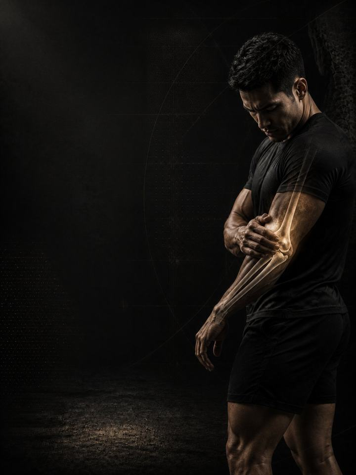

آلام المرفق والرسغ
أعِد بناء قدرة الأوتار في المرفق والرسغ بدلًا من محاولة التخلّص من الألم بالراحة.
- مناسب لـمرفق التنس، ومرفق لاعب الغولف، وألم الساعد الذي يأتي بعد يوم من الكتابة على لوحة المفاتيح أو القبض
- الجدولروتين يومي مدته 10–15 دقيقة، و3 أيام قوة في الأسبوع
- المعداتالروتين اليومي يحتاج إلى دمبل خفيف وشريط مطاطي. أيام القوة تحتاج إلى نادٍ متكامل.
- الصيغةملف PDF للهاتف، وكل تمرين مرتبط بفيديو توضيحي
المتجر يفتح قريبًا. حاليًا ينسخ زر الشراء رسالة قصيرة ويفتح إنستغرام: الصقها وتستلم الملف هناك.
لماذا يعود ألم المرفق والرسغ مرة بعد مرة
مرفق التنس، ومرفق لاعب الغولف، والألم العميق بعد يوم من الكتابة على لوحة المفاتيح، كلها قصة واحدة تُروى بثلاث طرق: وتر طُلب منه أكثر مما بُني له. يتمركز الألم عند العظم، وتضعف القبضة، ويصبح فتح برطمان أو حمل كوب هو ما يذكّرك بالمشكلة.
الميل الطبيعي هو الراحة، ولبس الدعامة، والانتظار، ولهذا تستمر هذه المشكلات شهورًا بدلًا من أسابيع. ألم أوتار المرفق مشكلة قدرة، لا مشكلة التهاب، ولهذا تخفّف مضادات الالتهاب الألم أسبوعين ثم لا تغيّر شيئًا. الأوتار لا تُشفى بالراحة، بل تتكيّف مع الحمل حين يُعطى بالجرعة الصحيحة، ببطء وتكرار. هذا البرنامج يقدّم تلك الجرعة، ويعالج ضعف الكتف والقبضة الذي وضع المرفق في هذا الموقف من الأساس.
أسبوعك
روتين يومي قصير، وثلاثة أيام قوة في النادي. أي ثلاثة أيام تصلح، ما دامت غير متتالية. هذا مثال واحد:
| الأحد | الاثنين | الثلاثاء | الأربعاء | الخميس | الجمعة | السبت |
|---|---|---|---|---|---|---|
| اليوم 1 + الروتين اليومي | الروتين اليومي | اليوم 2 + الروتين اليومي | الروتين اليومي | اليوم 3 + الروتين اليومي | الروتين اليومي | الروتين اليومي |
كيف يسير البرنامج:
- الاختبار أولًا. أربعة اختبارات قبل الأسبوع 1، تُعاد بعد الأسبوعين 3 و6. قوة القبضة هي الرقم الذي يتحسّن أولًا.
- الروتين اليومي، 10–15 دقيقة. سبع حركات، كل يوم. تستجيب الأوتار لعدد مرات تحميلها أكثر من شدّته، فالتمرين اليومي هو الجرعة.
- أيام القوة. اليوم 1 ثم 2 ثم 3، بالترتيب، لتدريب القبضة والساعد والكتف.
الأنماط الخمسة وراء معظم آلام المرفق والرسغ
شيء ما زاد: ساعات أمام لوحة المفاتيح، أو مضرب جديد، أو قبضة أثقل، أو حجم أكبر من تمارين الدفع. هذه الأنماط الخمسة هي حيث يكمن النقص عادة، والنمط الأخير هو الذي لا يفكّر معظم الناس في فحصه.
-
الحمل الزائد على أوتار المرفق الخارجية. الأوتار على الجهة الخارجية للمرفق تثبّت الرسغ في كل مرة تقبض فيها. اقبض طوال اليوم دون القدرة اللازمة، فيصبح الوتر عند النتوء العظمي خارج المرفق هو الحلقة الأضعف. يؤلمك القبض، ورفع الغلاية، والمصافحة. في البرنامج: مدّ الرسغ اللامركزي، لفّة تايلر، تمارين الثبات
-
الحمل الزائد على المرفق من الداخل. الجهة الداخلية للمرفق تتحمّل الحمل عندما تثني الذراع، أو تسحب، أو تلفّ الساعد إلى الداخل. السحب الثقيل، أو القبضة القوية، أو حركة اللفّ المتكرّرة تُحمّلها فوق طاقتها. وهي المشكلة نفسها التي تصيب جارتها الخارجية، لكن على الجهة الأخرى من المفصل. في البرنامج: ثني الرسغ، تمارين الكبّ، التجديف
-
ضعف القبضة وتحمّل الساعد. القبضة هي المقياس الصادق لكل ما تحت المرفق، وهي تتعب قبل أن تلاحظ ذلك بكثير. وعندما تخذلك في منتصف المهمة، يعوّض الساعد بالتوتر، ويمتصّ الوتر الفرق. في البرنامج: التعلّق الحر، تمارين الحمل، ثبات القبضة
-
رسغ متيبّس. تمرين الضغط، ووضعية الحمل الأمامي للبار، بل حتى لوحة المفاتيح، كلها تتطلّب أن ينثني الرسغ للخلف. ومن دون هذا المدى ينحشر المفصل في نهاية الحركة، ويعود الحمل إلى الساعد والمرفق بدلًا من أن يمرّ عبر اليد. في البرنامج: دوائر الرسغ، هزّ الرسغين على الأربع، إطالات الرسغ
-
ضعف الكتف ولوح الكتف. هذا هو النمط الذي يغفل عنه الناس. لوح الكتف الذي لا يتحكّم في الذراع يترك للمرفق والرسغ مهمة تثبيت الطرف كاملًا. عالج المرفق وتجاهل الكتف، وسيعود الألم خلال موسم واحد. في البرنامج: التجديف، سحب الحبل للوجه، تمارين الحمل
تمارين نمطك الإضافية. يذكر ملف PDF تمارين إضافية لكل نمط. اختر نمطين على الأكثر من الأنماط الأقرب إليك، وأضف تمارينهما في نهاية كل يوم قوة، 3 مجموعات لكل تمرين.
كيف تتقدّم الأسابيع الـ6
الروتين اليومي يبقى كما هو طوال الأسابيع الستة. وأيام القوة تنتقل مستوى أعلى كل أسبوعين.
| الأسبوعان 1–2 | الأسبوعان 3–4 | الأسبوعان 5–6 | |
|---|---|---|---|
| المرحلة | التحكّم | البناء | الدمج |
| التركيز | تمارين الثبات لتهدئة الألم | التحميل الثقيل البطيء | السرعة وتمارين الحمل |
| المجموعات الفعلية أسبوعيًا | 57 | 57 | 60 |
يرتفع متوسط الجهد من نحو 6/10 في الأسبوعين 1–2، إلى 6.8 في الأسبوعين 3–4، و7.4 في الأسبوعين 5–6. هذا المقياس هو الجهد (RPE)، أي تقييم من 1 إلى 10 لمدى صعوبة المجموعة: «جهد 6/10» يعني أنه يتبقى في الخزان نحو 4 تكرارات، و«جهد 7.4/10» نحو 2 إلى 3.
القواعد التي تجعله ينجح
- يزداد العمل كلما استحقّ الوتر ذلك. تمارين الثبات أولًا لأنها تخفّف الألم. ثم التحميل الثقيل البطيء، لأنه ما يعيد بناء الوتر. وتأتي السرعة وتمارين الحمل في النهاية.
- الروتين اليومي هو العلاج، وأيام القوة هي التمرين. الروتين لا يتغيّر، حتى يؤدّي دوره كل يوم.
- استمر في التمرين. في ملف PDF بدائل للرفعات التي تُجهد القبضة أكثر من غيرها، فلا تضطر إلى إيقاف كل شيء بينما يُعاد بناء الوتر.
- القرارات تتبع الأرقام. تعيد الاختبار بعد الأسبوعين 3 و6.
كيف تقيس تقدّمك
أربعة اختبارات قبل الأسبوع 1، ثم مرة أخرى بعد الأسبوعين 3 و6، تسجّلها في جدول النتائج في ملف PDF. والاختبارات الأربعة هي: القبضة بلا ألم، والتعلّق الحر، ومدى مدّ الرسغ، ومدّ الرسغ ضد المقاومة.
شكل التقدّم الجيد
- الأسبوعان 1–2: يهدأ الألم المستمر، وتبدأ تمارين الثبات بإشعارك بالراحة.
- الأسبوعان 3–4: ترتفع قوة القبضة بلا ألم، وتتوقّف المهام اليومية عن تذكيرك بالمشكلة.
- الأسبوعان 5–6: يتحمّل المرفق العمل بالحمل والعمل السريع، ويتحمّل جلسة كاملة من جديد.
الأوتار تتكيّف ببطء. ستة أسابيع تبني قدرة حقيقية، وتستمر إعادة البناء شهورًا بعدها. إذا لم يتغيّر شيء عند إعادة الاختبار في الأسبوع 3، فاحصل على تقييم من مختص بدلًا من الضغط أكثر.
معيار الإنهاء في الأسبوع 6: اختبار قبضة بلا ألم، وألم 2/10 أو أقل خلال يوم عادي، وتعلّق حر يتجاوز 30 ثانية، ورقم قبضة ارتفع منذ اختبارك الأول. إذا كانت القبضة ما زالت ترتفع، فأعِد المرحلة 3: الأوتار تحتاج كثيرًا إلى ستة أسابيع أخرى. والتزم بمقياس الألم وتعديلات الألم في ملف PDF.
غيّر الحمل، لا الذراع وحدها
الأوتار تتحمّل المجموع اليومي، لا الجلسة وحدها، ومعظم هذا المجموع خارج النادي. غيّر ما تفعله يدك طوال ثماني ساعات: مقبض أسمك للمضرب والقلم والفأرة، وساعدان مسنودان على المكتب، واستراحة خمس دقائق من القبض كل ساعة. وإذا كان نشاط محدّد هو ما بدأ الألم، فقلّله إلى النصف تقريبًا لمدة أسبوعين بدلًا من إيقافه تمامًا. وحافظ أيضًا على مسكّنَين مجانيين: 7–9 ساعات من النوم، والتحكّم في التوتر.
الأدلة العلمية
كل برنامج في المكتبة مبني على أبحاث منشورة، وقوة تلك الأبحاث مذكورة صراحةً لا ضمنًا. وحيث تكون الأدلة محدودة، تقول الصفحة ذلك.
| النتيجة | المصدر | ما لا تُظهره |
|---|---|---|
| تدريب القوة يخفض الإصابات الرياضية إلى أقل من ثلث معدلها في المجموعة الضابطة. أما الإطالة فلا تخفضها. | Lauersen, Bertelsen & Andersen, British Journal of Sports Medicine 2014. Meta-analysis of 25 randomised trials, 26,610 participants. PMID 24100287 | نسبة الخطر 0.32 لتدريب القوة و0.96 للإطالة. تفاوتت التجارب كثيرًا، ولم تكن الجرعة موحّدة. |
| أي وصفة تدريب معقولة أفضل من عدم التدريب. الأحمال الأثقل تحتل المرتبة الأعلى للقوة. | Currier, McLeod, Banfield et al., British Journal of Sports Medicine 2023. Network meta-analysis, 178 strength and 119 hypertrophy studies. PMID 37414459 | كانت الفروق بين الوصفات صغيرة، وكلها نجحت. |
| تستمر القوة في التحسّن كلما زادت المجموعات الأسبوعية، مع تناقص العائد. والتمرين بعدد مرات أكبر في الأسبوع يفيد القوة بشكل ثابت. | Pelland, Remmert, Robinson, Hinson & Zourdos, Sports Medicine 2025. Meta-regressions, 67 studies, 2,058 participants (79% male). PMID 41343037 | طريقة احتساب المجموعات (مباشرة أو غير مباشرة) تغيّر الأرقام كثيرًا. |
| مكاسب القوة متقاربة عبر نطاق واسع من التكرارات المتبقية في الخزان. والتمرين حتى الفشل العضلي غير ضروري لبناء القوة. | Robinson, Pelland, Remmert, Refalo, Jukic, Steele & Zourdos, Sports Medicine 2024. Meta-regressions, trained and untrained participants. PMID 38970765 | كان لا بد من تقدير التكرارات المتبقية من أوصاف الدراسات، ويصف الباحثون التحليل بأنه استكشافي. اعتمد على الاتجاه العام، لا على الأرقام الدقيقة. |
ماذا بعد
بعد 6 أسابيع:
- الكتف يحتاج إلى عمل أيضًا: الكتف ولوح الكتف
- ابنِ القوة والعضلات: القوة الأساسية
- تدرّب كرياضي: التطوير الرياضي
- منطقة أخرى تحتاج إلى عمل: السلسلة التصحيحية
قبل الشراء: احصل على موافقة طبية أولًا إذا
- كان لديك ألم في الصدر، أو ضيق تنفس غير معتاد، أو خفقان، أو دوخة أثناء المجهود.
- كان لديك ضغط دم مرتفع غير منضبط، أو مرض قلبي معروف، أو خضعت لعملية جراحية مؤخرًا.
- كنتِ حاملًا أو بعد الولادة بفترة قصيرة. احصلي على موافقة وبرنامج مخصص أولًا.
- بدأ الألم بإصابة محددة (صوت فرقعة، أو انهيار المفصل، أو تورم خلال ساعات)، أو لديك تنميل أو ضعف أو حرارة أو ألم يوقظك ليلًا.
هذا البرنامج إرشاد عام للياقة البدنية، ولا يغني عن التقييم الطبي.
المتجر يفتح قريبًا. حاليًا ينسخ زر الشراء رسالة قصيرة ويفتح إنستغرام: الصقها وتستلم الملف هناك.